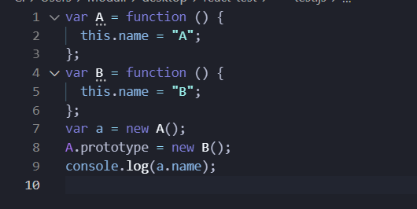
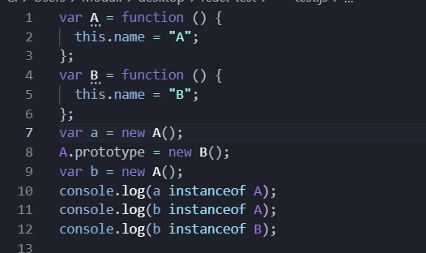

原型
怎么理解原型呢？原型可以认为是一个具有公共属性和方法的一个函数对象，通过实例化可以创建一个拥有与原型相同属性和方法的新对象，简而言之，原型就是一个对象模板。
实例对象
实例对象(非函数对象)通过原型的constructor(即构造函数)获得，实例对象只拥有proto(隐式原型)，隐式原型的作用是用来构成原型链，实现基于原型的继承，它指向的是实例对象的构造函数的prototype。
prototype 和 proto 区别是什么？
- 1.prototype是构造函数的属性
- 2.__proto__是每个实例都有的属性，可以访问prototype属性
- 3.实例的__proto__与其构造函数的prototype指向的是同一个对象(即原型对象)
原型链
原型链在我的理解上就是一个追溯原型的链式结构，原型链是原型对象创建过程的历史记录，当访问一个对象的某个属性时，会先在这个对象本身属性上查找，如果没有找到，则会去它的__proto__隐式原型上查找，即它的构造函数的prototype，如果还没有找到就会再在构造函数的prototype的__proto__中查找，这样一层一层向上查找就会形成一个链式结构。
什么是原型链？原型链解决的是什么问题？
- 原型链解决的主要是继承问题
- 每个对象拥有一个原型对象，通过 proto 指针指向其原型对象，并从中继承方法和属性，同时原型对象也可能拥有原型，这样一层一层，最终指向 null(Object.proptotype.__proto__指向的是null)。这种关系被称为原型链(prototype chain)，通过原型链一个对象可以拥有定义在其他对象中的属性和方法
- 构造函数 Parent、Parent.prototype 和 实例 p 的关系如下:(p.proto === Parent.prototype)
ps（2021.03.03）
最近在准备实习的事情，在cvte中笔试碰到了一个这样的题目：

刚刚看很容易被误导，认为输出的是B（原型链改变），但这个考的却是构造函数的this问题，a是通过构造函数A来生成的，构造函数的this指向a，所以a.name输出的依然是A.
同时笔试中还出现了相似题目，但这次确实是考原型链

题目前面和刚刚是差不多的，这时他问的是A、B的显式原型(prototype)是否在a、b的原型链上，首先很重要的一点要知道与编译后代码执行的顺序，a是在构造函数A的prototype改变之前生成的，它的原型链是a->A{}->{}->null;但b是在构造函数A的prototype改变之后生成的，它的原型链是b->B{name:B}->B{}->{}->null;
但是instanceof的判断是在A.prototype改变后进行的，所以这时A.prototype(即B{name:B})并不在a的原型链上，返回false；同理得b返回的是true